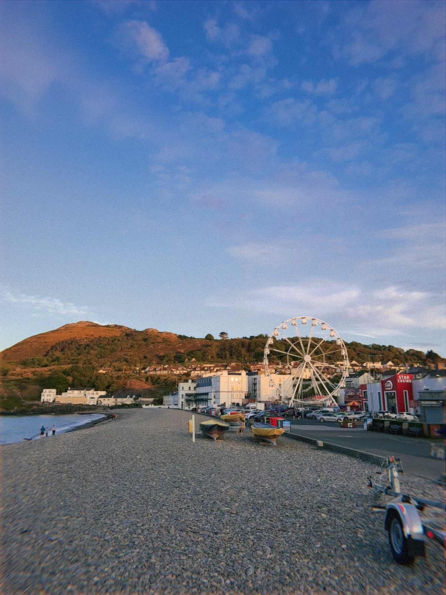
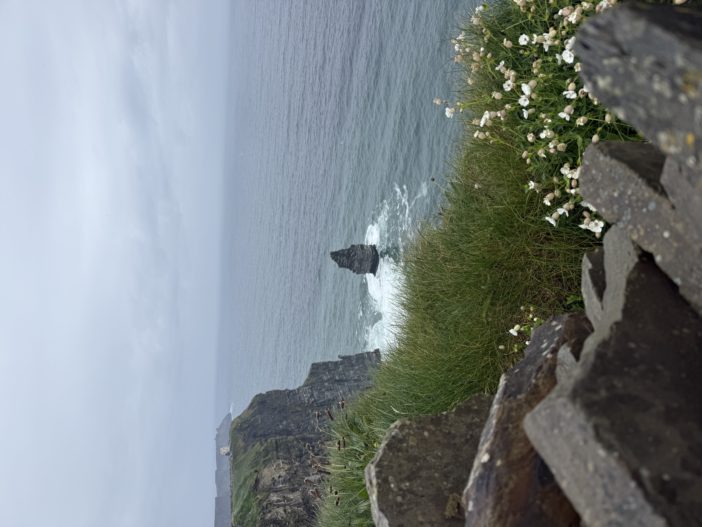
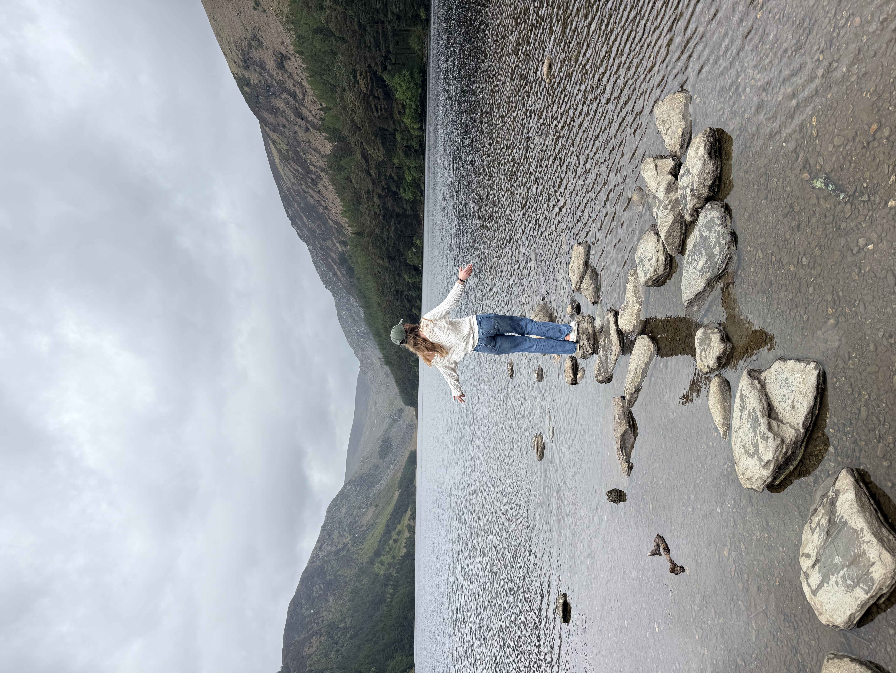
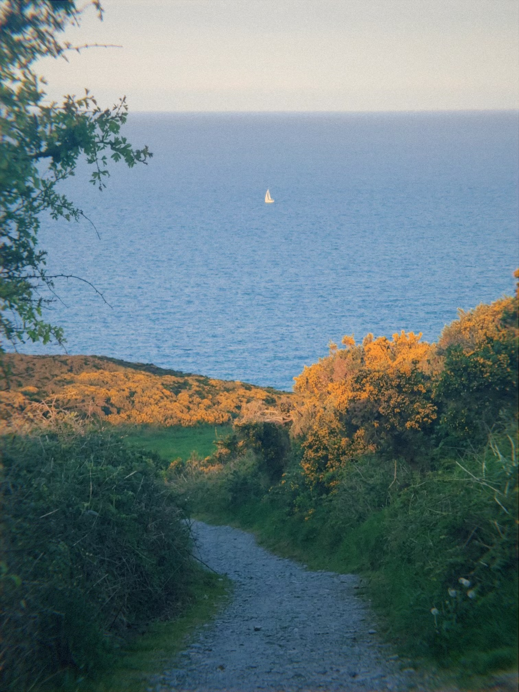
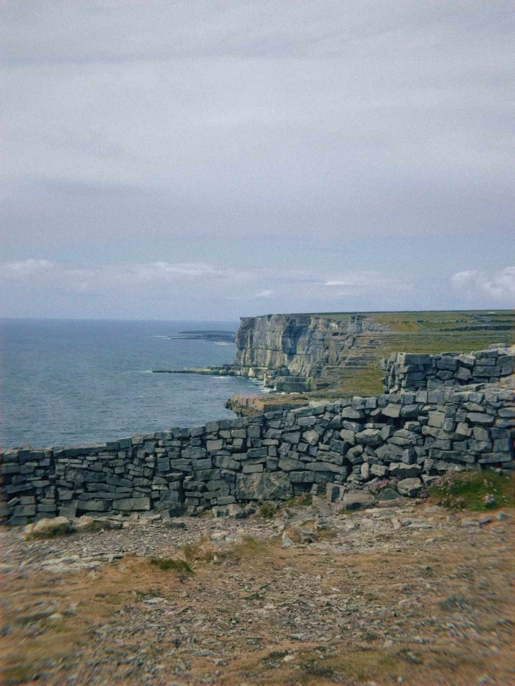
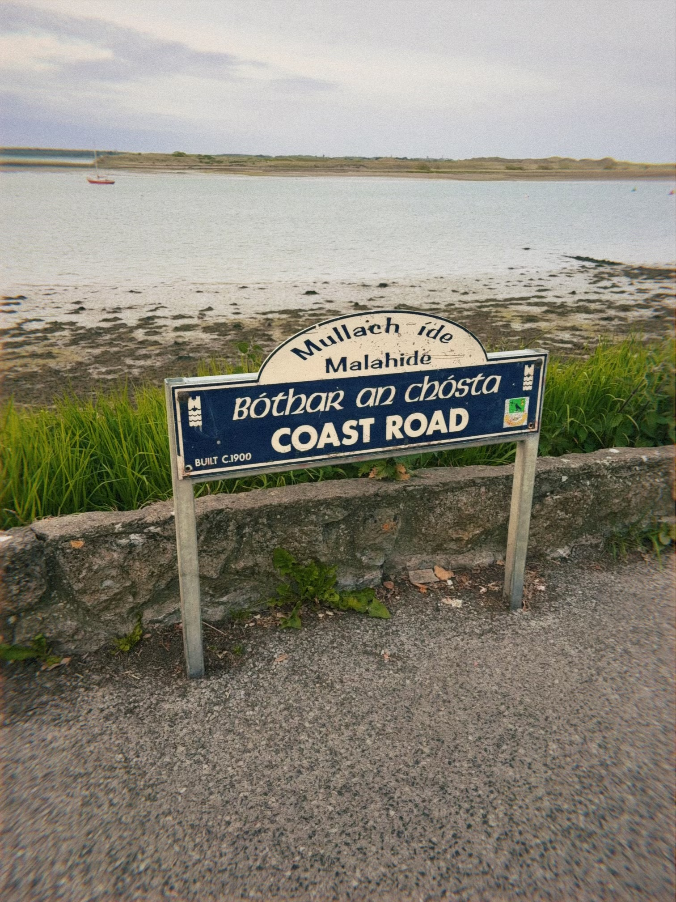
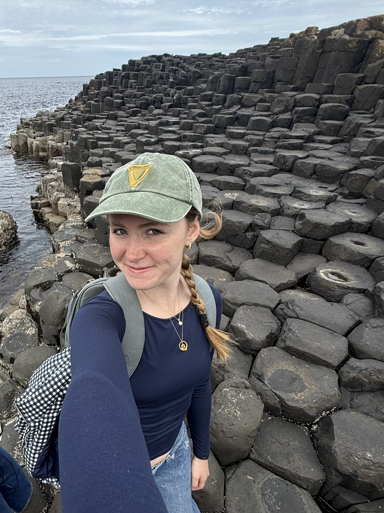

Bray
About an hour south of Dublin lies Bray, with a stony beach, beautiful cliff walk to greystones and tasty food at the martello hotel. Here you can hear the waves crash and feel the stones under your feet as your roommates and friends go for gelato. At sunset the hill overlooking the town is bathed in golden light beckoning you to wind your way along the coast to the stunning views of Bray head.
Cliffs of Moher
The cliffs of Moher are truly all they're cracked up to be. Awe-inspiring, a true natural wonder, a place so fantastical they filmed the 6th Harry Potter film there. When I went with my class, the rain was pouring and the roaring wind kept the stories of people getting blown over fresh in my mind. The trail was blocked off not too far on both sides of the entrance, but was amazing nevertheless. It felt so different from yesterday's trip to Inishmore, the fog obscuring the sunny little Aran islands into a mere smudge on the horizon. The yawning gap between land and water filled with birds and the chatter of different accents around me was truly an experience I could never forget.


Glendalough Mini Spinc Trail
Ireland is incredibly lush in the spring, and I think Glendalough is the best example of that. It felt like the rocks were taken straight out of totoro's forest, every tree had a whimsical twist and small flowers sparkled at every corner. There were so many trails, some paved and flat, others taking you to the top of the mountain ridge. I took the mini Spinc trail with Olivia, and we were out of breath by the time we reached the top, but it was a stunning view of the ridge in the middle of the Glendalough valley. From the top you could see the two lakes shimmering like gems in the midday sun, cliffs plunging down to meet them and rolling hills all around covered in tall pine trees and old oak. At the end of our hike Olivia and I eavesdropped on a tour of the monastery and ate pillowy henry hippos that made my hands sticky rain. I learned about the round towers (for escaping vikings) and the celtic symbology used to teach an illiterate population about christianity. Yew trees looked like they were out of a tapestry but they were actually from France, imported by Norman invaders and used to ward off wolves from the fresh dead in the graves. In the heart of the valley, in the priest's house still standing and the gravestones around me, I thought of the people who lived here many years ago, and of myself still enjoying the quiet mist in the valley today.
Howth Cliff Walk
This walk was my introduction to the wonders of Ireland's natural landscape. I went with Camila at around 5:00 and we stayed for a sunset that bathed Howth and its rolling hills in gold. The air was fresh and views seemed to get better by the minute. The weather was perfectly clear, and the people here were kind and helpful. Beshoff Bros is a fish and chip place I found in my tourist book and it was probably the best fish and chips I've ever had. They serve the whole fish on a bed of crispy chips and give you a choice of sauces and a lemon wedge. The ease of getting on the dart, the food, and the natural beauty of this little town make it my favorite hike close to Dublin.


Dún Aonghasa Fort (Inishmore)
Waking up early, taking an hour bus ride and an hour ferry to Inishmore was totally worth it for the incredible biking trails on the island! I could go right up to the cows, sheep and seal lookouts. I went with my friends and the weather was perfect. We hiked up to the fort on the island with views of the cliff. The fort itself was a bit lackluster and you had to pay to enter, but the view of the cliffs was really pretty from up there. The weather became super windy and a little rainy when coming back on the ferry, but I love being on boats so this trip was lovely no matter what form of transport I was taking.
Malahide Beach
In progress...


Giant's Causeway
In progress...